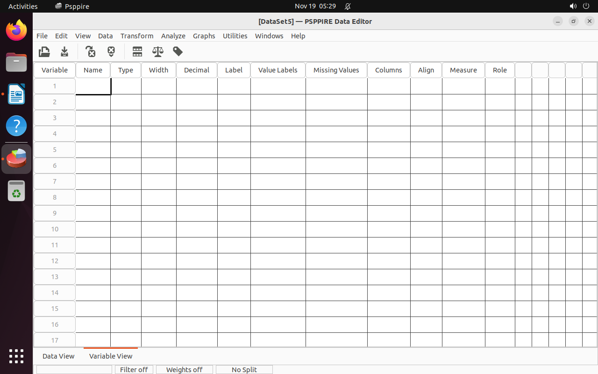
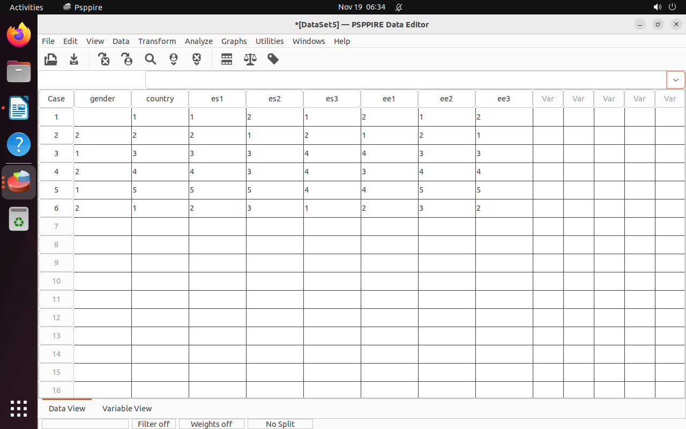

With guidance and rubrics
Agent Pi agent
Model gemini-3.8-flash
Runtime (h:mm:ss) 0:19:49
Total tokens 4,454,088
Browse screenshots (12 frames)

Previous
1 / 12 · frame_00000.png 2 / 12 · frame_00001.png 3 / 12 · frame_00002.png 4 / 12 · frame_00003.png 5 / 12 · frame_00004.png 6 / 12 · frame_00005.png 7 / 12 · frame_00006.png 8 / 12 · frame_00007.png 9 / 12 · frame_00008.png 10 / 12 · frame_00009.png 11 / 12 · frame_00010.png 12 / 12 · frame_00011.png Next
All screenshots frame_00000.png frame_00001.png frame_00002.png frame_00003.png frame_00004.png frame_00005.png frame_00006.png frame_00007.png frame_00008.png frame_00009.png frame_00010.png frame_00011.png
Browse trajectory events (194 events)
Previous event
Event
Next event
Without guidance or rubrics
Agent Pi agent
Model gemini-3.8-flash
Runtime (h:mm:ss) 0:19:03
Total tokens 5,365,864
Browse screenshots (7 frames)

Previous
1 / 7 · frame_00000.png 2 / 7 · frame_00001.png 3 / 7 · frame_00002.png 4 / 7 · frame_00003.png 5 / 7 · frame_00004.png 6 / 7 · frame_00005.png 7 / 7 · frame_00006.png Next
All screenshots frame_00000.png frame_00001.png frame_00002.png frame_00003.png frame_00004.png frame_00005.png frame_00006.png
Browse trajectory events (188 events)
Previous event
Event
Next event
Runtime covers Pi’s execution. Total tokens include input and output, counting cached input once. Published trajectories omit session credentials and redact authentication-related payloads.